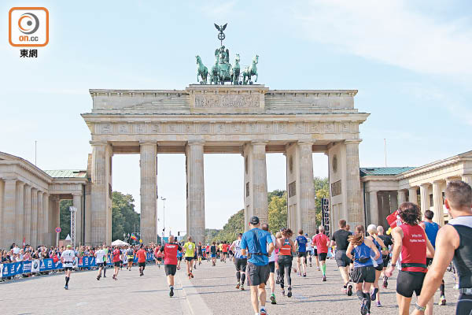
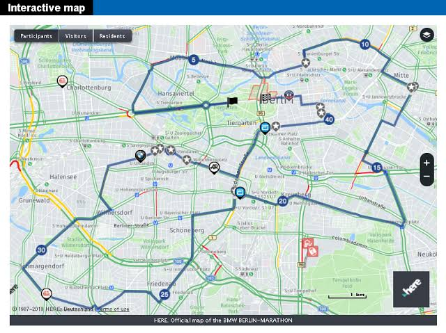
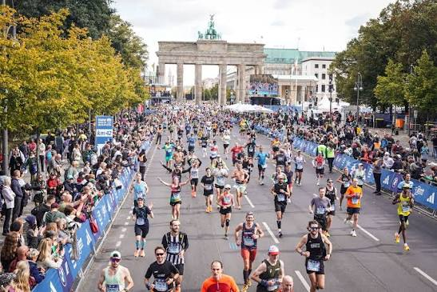

德國柏林馬拉松 (BMW Berlin Marathon)
世界馬拉松大滿貫 (WMM) 核心成員 ｜ 全球公認最速賽道與破紀錄傳奇舞台
創始於 1974 年，於每年 9 月最後一個星期日舉行。憑藉其近乎絕對平坦的柏油路況、筆直長街與初秋 12°C 至 18°C 的清涼氣候，成為人類史上誕生全馬世界紀錄次數最多的終極速道殿堂。
• 極速筆直賽道：總爬升僅約 35 公尺，寬闊道路直通歷史核心。
• 歷史破牆見證：自 1990 年起跑者歷史性穿過布蘭登堡門，象徵東西德統一融合。
• 全民敲鍋應援：沿線數十萬市民敲打鍋碗瓢盆與管樂演奏，熱烈聲浪震撼全城。

賽事基本資訊與核心規格
極低坡度與涼爽秋候，造就全球跑者公認難度最低的競速黃金賽道
• 舉辦月份：每年 9 月最後一個星期日。
• 關門限時：6 小時 15 分鐘。
• 參賽規模：逾 45,000 名跑者。
• 累計爬升：約 35 公尺。
• 累計下降：約 37 公尺。
• 平均坡度：全線接近 0% 絕對平坦。
• 路面屬性：極平整寬闊柏油大道。
• 難度分級：初級（最速賽道）。
• 完賽率：歷年高達 97% 以上。
• 標籤認證：世界田總白金標籤。
• 聯盟體系：Abbott WMM 六大滿貫。
• 資格採納：成績獲 AIMS 及波士頓 BQ 認證。
賽道結構與關鍵魔王路段剖析
六月十七日大街環抱起跑，穿越歷史行政區與終點前的心理幻影考驗
• 0-10km（林蔭開局）：蒂爾加滕公園出發，繞行勝利紀念柱與國會大廈。
• 10-25km（文藝行政區）：穿越夏洛滕堡與腓特烈斯海恩，街區人群自發演奏管樂應援。
• 25-35km（南區折返）：行經克羅伊茨貝格與舍訥貝格，進入最考驗配速耐力的沉穩期。
• 35-42.195km（榮耀大道）：折回菩提樹下大道，直視布蘭登堡門最後加速。
• 痛點剖析：柏林賽道無地形陡坡，最大考驗來自「心理距離幻象」。在 41km 穿過宏偉的布蘭登堡門時，多數新手誤以為衝線已至而提前放鬆力竭。
• 通關策略：切記穿過布蘭登堡門後，距離真正終點線仍有約 400 公尺！需保持衝刺節奏直至踏過計時毯。

報名管道與搶票四大途徑
年度必搶的大滿貫席位：掌握公眾抽籤、團隊保障、BQ 成績直通與慈善保額
• 登記時程：每年 9 月底至 11 月初。
• 抽籤公布：每年 11 月底電郵通知。
• 報名費用：約 205 歐元。
• 中籤特性：全球競爭，中籤直接扣款。
• 運作機制：2 至 3 人組隊同進同退。
• 隊伍代碼：隊長建隊後發送代碼加入。
• 錄取規則：一人中籤則全員中籤。
• 適合對象：跑友結伴或情侶出賽。
• 認證賽事：AIMS 或 WMM 分齡採納賽事。
• ≤44歲標準：男 <2:45，女 <3:10。
• 45-59歲：男 <2:55，女 <3:30。
• ≥60歲：男 <3:25，女 <4:20。
• 官方慈善：向指定合作機構捐款取得名額。
• 旅行社套裝：購買授權旅行社機加酒套裝。
• 優勢：100% 參賽確定性。
• 成本：套票成本高於標準報名費。
交通後勤、住宿選址與 Expo 領物
起終點同區之環狀物流優勢：掌握閘門分流與大滿貫博覽會要領
• 起跑與終點：皆位於蒂爾加滕公園六月十七日大街與布蘭登堡門周邊。
• 公共交通：搭乘柏林城鐵 S-Bahn 或地鐵 U-Bahn 至周邊站點步行抵達。
• 管制注意事項：起跑區實施極為嚴格的安全防線，直線距離不等於步行時間，務必提早 90 分鐘到達專屬閘門。
• 首選 A 區（Tiergarten 鄰近區）：起終點徒步即可往返，賽後最省體力。
• 首選 B 區（Mitte 米特區）：近布蘭登堡門與菩提樹下大道，交通生活機能極佳。
• 後勤要點：訂房時務必向飯店確認是否提供週日比賽「延後退房（Late Check-out）」或完賽沐浴寄存。
• 博覽會地點：柏林舊騰珀爾霍夫機場（Flughafen Tempelhof）。
• 領物規範：本人持護照與確認函現場手環佩戴核驗，嚴禁代領。
• 特色活動：賽前一日清晨舉行全城「早餐跑（Breakfast Run）」，賽前更有國際直排輪競速賽，展現多元包容。
氣候數據、跑鞋推薦與賽事補給
秋高氣爽的競速體感，配合碳板競速鞋發揮極速賽道極限潛能
• 氣溫區間：12°C 至 18°C（體感極為舒適乾爽）。
• 降雨機率：秋季少雨，多為多雲或晴朗好天氣。
• 風速情況：市中心林蔭街道有效阻擋側風，氣流穩定。
• 起跑體感：清晨稍具涼意，起步後迅速進入體能巡航甜蜜點。
• 競速跑鞋首選：全平坦優質柏油路面，極度適合高回彈厚底碳板跑鞋。
• 上身穿著：輕量排汗背心或短袖短褲即可，無需厚重保暖層。
• 起跑防風：9 月清晨集合等待區微涼，可備一件舊長袖或雨衣保暖。
• 防磨保護：腋下與大腿內側塗抹凡士林，應對高配速摩擦。
• 官方水站：每 5 公里設有水、電解質運動飲料與熱茶補給站。
• 能量膠配置：大會於後半程特定站點提供能量膠，但建議全程自備熟悉之品牌。
• 能量補給節奏：平坦路段易不知不覺拉快配速，建議每 8-10km 固定補充能量膠與水分。
• 完賽啤酒：終點提供德國特色無酒精清涼啤酒慶功。
賽後文化巡禮與系列下一站
掛上沉甸甸的完賽獎牌，暢飲德國黑啤、品嘗烤豬腳，啟航下一場歷史賽事
• 德式傳統盛宴：賽後換裝前往市中心經典餐廳，大啖酥脆德國烤豬腳（Schweinshaxe）與純釀小麥啤酒。
• 柏林圍牆東邊畫廊：翌日漫步殘存圍牆藝術長廊，沉浸式回味這座自由之城的歷史重生。
• 博物館島排酸漫步：遊覽佩加蒙博物館與柏林大教堂，以慢步動態排酸，享受秋日德意志美景。
